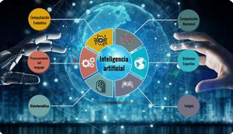
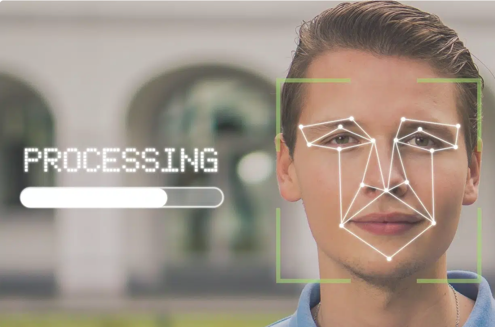
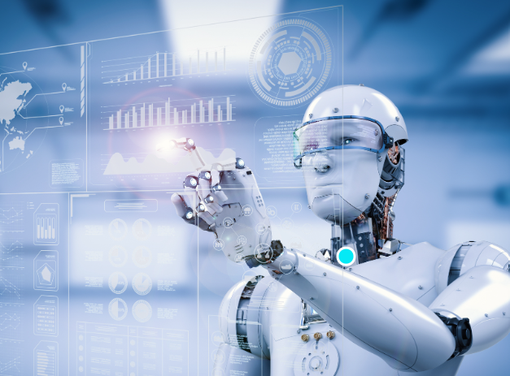

Definicion
La inteligencia artificial es un sistema creado por el ser humano que se constituye como un agente racional no vivo. La racionalidad, en este caso, es entendida como la capacidad para maximizar un resultado esperado. La inteligencia artificial, por lo tanto, consiste en el diseño de procesos que, al ejecutarse sobre una arquitectura física, producen resultados que maximizan una cierta medida de rendimiento. Estos procesos se basan en secuencias de entradas que son percibidas y almacenadas por la mencionada arquitectura. Cabe destacar que la inteligencia está vinculada a saber elegir las mejores opciones para resolver algún tipo de problema. Existen diversos tipos de inteligencia según sus atributos y procesos, como la inteligencia operativa, la inteligencia biológica o la inteligencia psicológica.
Su uso en la investigación científica:
Sin lugar a dudas, una de las aplicaciones más interesantes y significativas de la inteligencia artificial es la investigación científica. Con la ayuda de un ordenador, y más aún un conjunto de ellos, se potencian considerablemente las posibilidades del ser humano de descubrir los misterios que tan apasionadamente viene persiguiendo desde hace siglos. Cuando se otorga a estos dispositivos la habilidad de aprender y de discernir, se los convierte en entidades que rozan las capacidades de un superhombre, dado que alcanzan velocidades de procesamiento imposibles para nosotros y que no necesitan descansar para funcionar, entre otras ventajas que los ubican por sobre los seres vivos en este contexto. El aprendizaje automático (machine learning) es uno de los recursos de la inteligencia artificial. A través de redes neuronales (que imitan el funcionamiento del cerebro humano) y el aprendizaje profundo o deep learning (algoritmos de machine learning que apuntan al modelado de abstracciones), los sistemas consiguen aprender de su propias experiencias y así logran una optimización de su funcionamiento. El reconocimiento de patrones y el procesamiento de lenguaje natural (NLP), de este modo, son algunas de las tareas que se pueden llevar a cabo gracias a la inteligencia artificial.
Diversas aplicaciones de la inteligencia artificial
Como ya hemos visto, las aplicaciones de la inteligencia artificial son numerosas. No suele tratarse de la creación de robots o autómatas como muestran las películas, sino de recursos más simples (dentro de la complejidad del tema) o cotidianos. Asistentes virtuales como Siri (Apple), Alexa (Amazon) y Google Assistant, por ejemplo, recurren a estas herramientas. También los chatbots que permiten mantener conversaciones vía chat. La inteligencia artificial, asimismo, permite trabajar con enormes cantidades de datos (big data), posibilitando la clasificación, el análisis predictivo y la automatización de tareas. Los vehículos autónomos, el diagnóstico médico automatizado, el trading algorítmico, los sistemas de recomendación, la traducción automática, el filtrado de spam, la personalización de anuncios, el reconocimiento de voz, la optimización de rutas y hasta la creación de contenidos también son posibles mediante inteligencia artificial.
